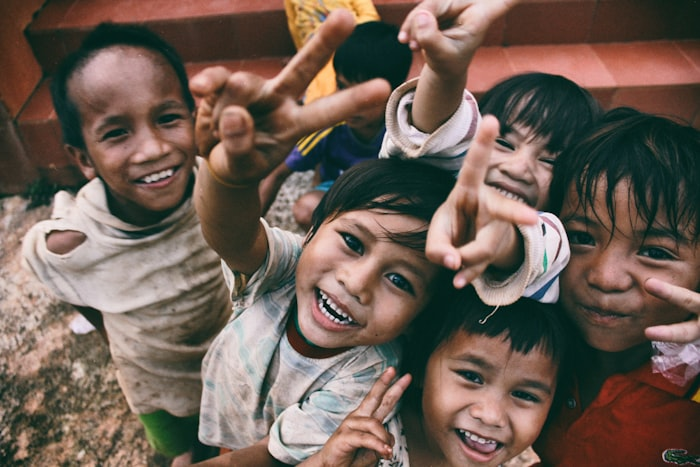

Non-Profit Organisation
Creating Hope,
Creating Hope,
Building Futures
Together, we empower communities, transform lives, and create lasting change. Join us in our mission to make the world a better place for everyone.
Scroll to Explore
Our Mission
We are dedicated to creating sustainable change through community empowerment.
Every contribution, every volunteer hour, and every voice raised in support brings us closer to a world where everyone has the opportunity to thrive. We believe in the power of collective action to solve the world's most pressing challenges.
Our approach is grounded in transparency, efficiency, and deep respect for the communities we serve. By focusing on education, healthcare, and economic development, we build the foundations for long-term prosperity.
Learn Our Story
"Compassion in action."
Our Impact in Numbers
500+
Active Campaigns
10,000+
Volunteers Worldwide
$2M+
Funds Raised
87+
Countries Reached
Make a Difference
Featured Campaigns
Explore our most impactful ongoing campaigns and join thousands making a real difference in communities worldwide.
Loading campaigns…